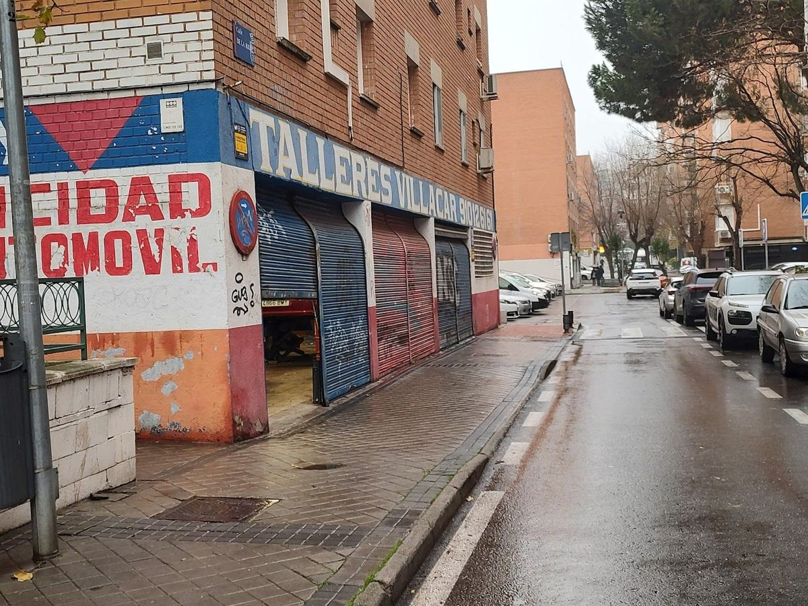

Taller de mecánica y electricidad en la calle de la Rioja 128, Leganés. Si tu coche hace algo raro con las luces, el arranque o la batería, empieza por aquí.
Llamar al taller4,6 · 62 reseñas en Google
| Lunes | 9:30–14:00, 15:30–19:00 |
|---|---|
| Martes | 9:30–14:00, 15:30–19:00 |
| Miércoles | 9:30–14:00, 15:30–19:00 |
| Jueves | 9:30–14:00, 15:30–19:00 |
| Viernes | 9:30–14:00, 15:30–19:00 |
| Sábado | Cerrado |
| Domingo | Cerrado |
C. de la Rioja, 128
28915 Leganés, Madrid
Calle de la Rioja 128, Leganés. Llámanos y te esperamos.